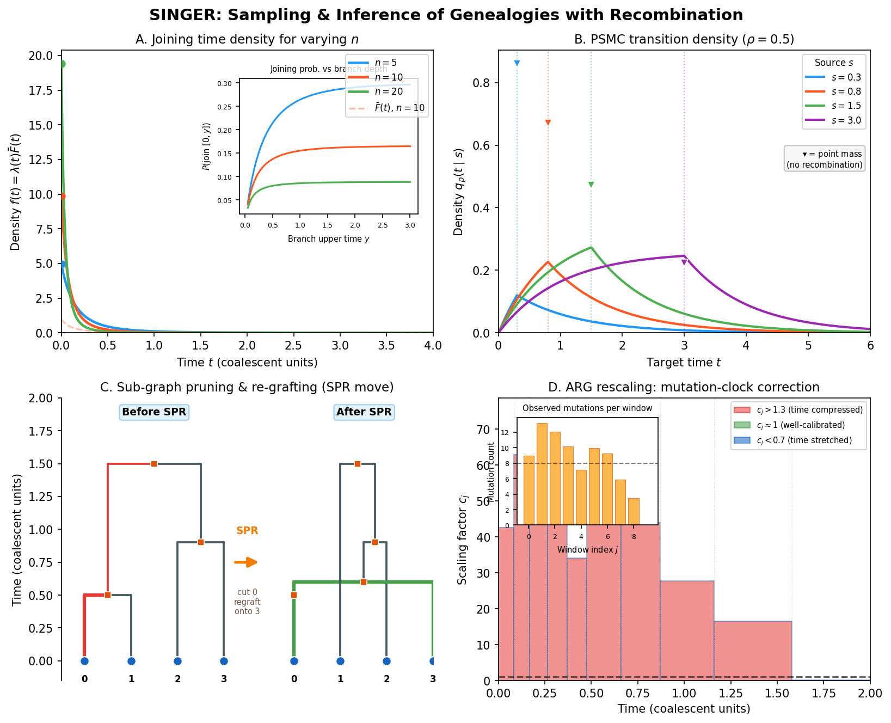

Overview of SINGER
Before assembling the watch, lay out every part and understand what it does.
{kind=link}

SINGER at a glance. The four key gears of the SINGER algorithm: branch joining probabilities governing how lineages merge in the ARG, PSMC transition densities reused from Timepiece I for the pairwise coalescence kernel, SPR (subtree prune and regraft) tree rearrangement showing how MCMC proposals modify the genealogy, and ARG rescaling factors that adjust branch lengths to match the data.
In traditional watchmaking, a “grand complication” is the most ambitious kind of timepiece – one that combines many independent complications (calendar, chronograph, minute repeater, tourbillon) into a single unified mechanism. Every gear must mesh with every other; every complication must share the same mainspring and beat rate. SINGER is the grand complication of population genetics. It takes the pieces we have built in earlier chapters – coalescent theory, HMMs, the SMC approximation, the PSMC transition density – and combines them into a single engine that reconstructs complete genealogical histories from DNA sequences.
This overview chapter lays out the blueprint: what SINGER does, how it does it, and how the pieces fit together. The detailed derivations come in subsequent chapters. If you have worked through PSMC (Timepiece I: PSMC), you already have the conceptual foundation. SINGER extends that foundation from two haplotypes to many, from a single coalescence time track to a full ancestral recombination graph.
What Does SINGER Do?
Given a set of \(n\) aligned DNA sequences (haplotypes), SINGER produces samples from the posterior distribution of Ancestral Recombination Graphs.
Each sampled ARG \(\mathcal{G}^{(m)}\) is a full genealogical history: a sequence of marginal trees along the genome, connected by recombination events, with coalescence times on every node.
From these posterior samples, you can compute:
Pairwise coalescence times between any two samples at any genomic position
Allele ages – when mutations arose
Local effective population size through time
Signatures of natural selection
Probability Aside – What is a Posterior Distribution?
If you are new to Bayesian statistics, “posterior distribution” deserves a careful explanation. The word “posterior” means “after” – it is the distribution of what you believe after seeing the data.
In SINGER’s case:
Prior belief: Before looking at any DNA, we have a model of how genealogies are generated (the coalescent with recombination). This model says some ARGs are more probable than others – for example, ARGs consistent with a large population tend to have deeper coalescence times.
Data (likelihood): The observed DNA sequences \(\mathbf{D}\) constrain which ARGs are plausible. An ARG that implies many mutations where none are observed is unlikely; one that explains the observed variation parsimoniously is more likely.
Posterior: The posterior distribution \(P(\mathcal{G} \mid \mathbf{D})\) combines prior and likelihood via Bayes’ rule:
\[P(\mathcal{G} \mid \mathbf{D}) \propto P(\mathbf{D} \mid \mathcal{G}) \cdot P(\mathcal{G})\]This tells us: among all possible ARGs, which ones are consistent with both the coalescent model and the observed DNA? The posterior is a landscape over ARG space – some genealogies sit on peaks (high probability), most sit in valleys (negligible probability).
SINGER does not compute this posterior exactly (the space of all possible ARGs is astronomically large). Instead, it samples from it: each run produces a collection of ARGs, where more probable ARGs appear more often. This is the essence of Bayesian inference – you summarize your uncertainty by drawing representative examples from the posterior.
Probability Aside – What is MCMC?
SINGER uses Markov chain Monte Carlo (MCMC) to draw samples from the posterior distribution. MCMC is a general strategy for exploring a complex, high-dimensional space when you cannot enumerate all possibilities.
The idea is simple: start with some initial guess (here, an initial ARG), then repeatedly make small random modifications. Each modification is accepted or rejected based on whether the new state is more or less probable under the posterior. Over many iterations, the sequence of accepted states traces out a random walk through ARG space that, in the long run, visits each ARG in proportion to its posterior probability.
Think of it like a watchmaker who cannot see the whole mechanism at once. Instead, she makes one small adjustment at a time – swapping a gear, adjusting a spring – and checks whether the watch runs better or worse. Over many adjustments, the watch converges to an excellent state, even though no single adjustment was planned with full knowledge of the final result.
In SINGER, each MCMC step removes one haplotype’s path through the ARG and re-threads it using the HMM machinery described below. The accept/reject decision ensures that the chain converges to the correct posterior distribution.
The Threading Idea
SINGER’s core insight is to build the ARG one haplotype at a time. This is called threading – and the metaphor from watchmaking is precise. Threading a new haplotype into an existing ARG is like fitting a new gear into an existing movement: you need to find where it meshes (which branch it attaches to) and how deep it sits (at what time it joins).
But what does this mean concretely? Let us walk through the process step by step.
A Step-by-Step Walkthrough of Threading
Suppose you have already built an ARG for three haplotypes. At a given genomic position, the marginal tree might look like this:
MRCA
/ \
* h3
/ \
h1 h2
time
^
|
0 (present)
Now you want to add a fourth haplotype, h4. Threading means answering two
questions at every position along the genome:
Which branch does h4 join? There are five branches in this tree: the three leaf branches (leading to h1, h2, h3), the internal branch (from the h1-h2 ancestor to the MRCA), and the root branch (above the MRCA). The observed DNA of h4 constrains the answer: if h4 looks genetically similar to h1 and h2, it probably joins somewhere in their subtree. The branch sampling HMM makes this choice.
At what time does h4 join? Once we know h4 attaches to, say, the h1-h2 internal branch, we still need to know when along that branch the attachment occurs. A recent joining time means h4 diverged from h1/h2 recently (few mutations expected); a deep joining time means an ancient divergence (many mutations expected). The time sampling HMM makes this choice.
What happens at recombination breakpoints? As we move along the genome, the marginal tree changes at recombination points. At each such transition, h4 might switch to joining a different branch, or the same branch at a different time. The HMM transition probabilities, governed by the SMC (see the SMC chapter), model these switches.
After threading, the four-haplotype ARG is complete at every position. The new lineage has been grafted in, with a specific branch and time at each bin.
This process converts a high-dimensional combinatorial problem – searching over all possible ARGs for \(n\) haplotypes – into a sequence of local decisions that can be modeled as HMMs. Each threading step conditions on the partial ARG already built, so the space of possibilities at each step is manageable.
# Pseudocode for SINGER initialization
def initialize_arg(haplotypes):
"""Build an initial ARG by threading haplotypes one at a time.
This is the starting point for the MCMC sampler. We grow the ARG
incrementally: start with two haplotypes (trivial), then add each
remaining haplotype using the branch + time sampling HMMs.
"""
n = len(haplotypes)
# Start with the first two haplotypes (trivial tree: just a pair
# that coalesces at some random time drawn from the prior)
arg = create_pairwise_arg(haplotypes[0], haplotypes[1])
# Thread remaining haplotypes one by one
for i in range(2, n):
# Step 1: Branch sampling - which branch to join?
# Uses an HMM where hidden states are branches in each
# marginal tree, and the observed data constrains the choice.
joining_branches = sample_branches(arg, haplotypes[i])
# Step 2: Time sampling - when to join?
# Uses a second HMM where hidden states are time sub-intervals
# within the chosen branch, governed by PSMC-like dynamics.
joining_times = sample_times(arg, haplotypes[i], joining_branches)
# Step 3: Update the ARG by grafting the new haplotype in
# at the sampled branches and times across all genomic positions.
arg = thread_haplotype(arg, haplotypes[i],
joining_branches, joining_times)
# Step 4: Rescale coalescence times so that the mutation clock
# stays calibrated (more on this in the rescaling chapter).
arg = rescale_arg(arg)
return arg
A Narrative Overview of the Key Concepts
Before we define terms precisely, here is the story in plain language.
SINGER works with a partial ARG – the genealogical history of all haplotypes except the one currently being threaded. This partial ARG is a sequence of marginal trees along the genome, one per genomic bin. At each bin, the partial tree has branches (the edges connecting nodes), and the new haplotype must find its place among them.
The new lineage is the branch connecting the new haplotype (a leaf at time zero) to the partial tree. It attaches to a joining branch at a joining point, which sits at a specific joining time. As we move along the genome, recombination can cause the joining branch and time to change, creating a path through the space of possible attachment points.
The genome is divided into bins – small segments (typically around 1 base pair) that serve as the discrete positions of the HMMs. At each bin, SINGER considers the marginal tree (the genealogical tree at that position) and decides where the new lineage attaches.
Terminology
With that narrative in mind, here are the precise definitions:
Term |
Definition |
|---|---|
Partial ARG |
The ARG for the first \(n-1\) haplotypes, before threading the \(n\)-th. Think of it as the existing watch movement before you add a new gear. |
New node |
The leaf node being threaded onto the partial ARG (the haplotype being added) |
New lineage |
The branch connecting the new node to the partial tree |
Joining branch |
The branch in the partial tree that the new lineage attaches to |
Joining point |
The specific location (time) on the joining branch where attachment occurs |
Joining time \(T\) |
The time of the joining point; equivalently, the coalescence time between the new haplotype and its closest relative in the partial ARG at that position |
Bin |
A segment of the genome; SINGER partitions the genome into equal-sized bins (default ~1 bp), which serve as the discrete “positions” of the HMM |
Marginal tree |
The genealogical tree at a single genomic position |
The Two-HMM Architecture
SINGER decouples the inference into two stages: first choose the branch, then choose the time. This is the architectural decision that makes SINGER scalable to large sample sizes, and understanding why it works requires a moment of thought.
What Decoupling Means
In principle, you could build a single HMM whose hidden states are all possible (branch, time) pairs at each genomic position – this is exactly what ARGweaver does (see Overview of ARGweaver). But the number of such pairs grows rapidly with the number of haplotypes and the resolution of the time axis. For 100 haplotypes with 20 time points, each marginal tree has roughly 200 branches, giving about 4,000 states per position. The HMM transition computation scales as the square of the state count, making this approach expensive.
SINGER’s insight is to split the problem into two smaller HMMs:
Stage 1: Branch Sampling HMM
Hidden states: branches in the marginal tree (topology only – where)
Observations: allelic states (0/1) at each bin
Output: a sequence of joining branches along the genome
Stage 2: Time Sampling HMM
Hidden states: time sub-intervals within each joining branch (when)
Observations: allelic states (0/1) at each bin
Input: the joining branch sequence from Stage 1
Output: joining times along the genome
The first HMM has roughly \(2n - 1\) states per position (the number of branches in a tree with \(n\) leaves). The second HMM has roughly \(d\) states per position (the number of time sub-intervals, typically around 20). Both are much smaller than the \((2n-1) \times d\) joint state space.
Why This Decomposition is Natural
The two-stage design is not just a computational trick – it reflects a natural decomposition of the genealogical question into two orthogonal components:
Branch = topology = where. Choosing a branch determines the topological relationship between the new haplotype and the existing ones. It answers the question: “Who is this haplotype most closely related to at this genomic position?” This is primarily informed by patterns of shared and unshared mutations – the qualitative signal in the data.
Time = metric = when. Choosing a time within the branch determines the metric property: how long ago did the new haplotype and its closest relative diverge? This is primarily informed by the density of mutations – the quantitative signal.
In watchmaking terms, this is like a two-stage adjustment mechanism. First you set the position of a gear (which slot does it go into?), then you fine-tune the depth (how far in does it sit?). The two adjustments are largely independent: the slot determines the coarse function, the depth determines the fine calibration.
This decomposition also connects to the mathematical structure. The branch sampling HMM uses the SMC (see the SMC chapter) to model how topology changes along the genome due to recombination. The time sampling HMM reuses the PSMC transition density (Timepiece I: PSMC) to model how coalescence times change – the same continuous-time Markov chain that PSMC uses for two haplotypes now governs the time dynamics within a single branch of the larger tree.
The Cost of Decoupling
Decoupling topology and times introduces a subtle problem: certain sequences of branch choices that look valid one bin at a time can be impossible when considered jointly across adjacent bins. This happens because of partial branch states.
Here is the issue concretely. Suppose at bin \(\ell\), the new lineage joins a branch \(b\) that spans the time interval \([x, y)\). At the next bin \(\ell + 1\), after a recombination event in the partial ARG changes the tree topology, branch \(b\) might no longer exist. A “full” branch state would require the lineage to land on a branch that spans its full original time range. But the only available branches in the new tree might cover only part of that range. SINGER introduces partial branch states – branches that are valid only over a sub-interval of their full span – to handle these transitions correctly. The branch sampling HMM includes both full and partial states, ensuring that every sampled branch sequence corresponds to a valid ARG. See Branch Sampling for the full treatment.
Parameters
SINGER takes the following parameters. We explain each one in terms accessible to readers who may not be specialists in population genetics.
Parameter |
Symbol |
Meaning |
|---|---|---|
Mutation rate |
\(\theta = 4N_e\mu\) |
The population-scaled mutation rate per base pair. This combines the per-generation, per-base mutation rate \(\mu\) with the effective population size \(N_e\) (see below). A higher \(\theta\) means more mutations are expected per unit of coalescent time, making the data more informative about genealogical relationships. |
Recombination rate |
\(\rho = 4N_e r \cdot m\) |
The population-scaled recombination rate per bin. Here \(r\) is the per-generation, per-base recombination rate and \(m\) is the bin size. Recombination breaks up the genealogy, so higher \(\rho\) means the marginal tree changes more frequently along the genome. |
Effective pop. size |
\(N_e\) |
The effective population size – a reference parameter that sets the timescale of the coalescent. Intuitively, \(N_e\) is the size of an idealized population that would produce the same patterns of genetic variation as the real (complex, structured) population. It is not a census count of living individuals; it is a summary of the population’s genetic behavior. For humans, \(N_e \approx 10{,}000\), even though the census population is billions, because bottlenecks and structure reduce the effective number of breeding individuals over evolutionary time. |
Bin size |
\(m\) |
The genomic length of each bin (default: ~1 bp). Smaller bins give finer resolution but increase computational cost. |
Pruning threshold |
\(\epsilon\) |
The forward probability threshold for including partial branch states (default: 1%). During the forward pass of the branch sampling HMM, any state whose forward probability falls below \(\epsilon\) times the total probability at that position is pruned – excluded from further computation. Think of it as a noise floor: branches that are extremely unlikely given the data so far are dropped to save time. A smaller \(\epsilon\) keeps more states (more accurate but slower); a larger \(\epsilon\) prunes more aggressively (faster but risks missing valid branches). |
The Flow in Detail
Here is a more detailed view of how the pieces connect. Follow this diagram from top to bottom to see the complete pipeline for threading one haplotype:
Haplotype n + Partial ARG
|
v
+-----------------------+
| BRANCH SAMPLING |
| |
| For each bin l: |
| States: branches |
| Emission: P(data |
| | joining branch)|
| Transition: SMC |
| |
| -> Forward algorithm |
| -> Stochastic |
| traceback |
+-----------------------+
|
| Sequence of joining branches
v
+-----------------------+
| TIME SAMPLING |
| |
| For each bin l: |
| States: time |
| sub-intervals |
| Emission: P(data |
| | joining time) |
| Transition: PSMC |
| |
| -> Forward algorithm |
| -> Stochastic |
| traceback |
+-----------------------+
|
| Joining times along genome
v
+-----------------------+
| ARG RESCALING |
| |
| Partition time axis |
| Count mutations per |
| time window |
| Scale to match |
| mutation clock |
+-----------------------+
|
v
Updated ARG
The branch sampling stage (top box) is where topology is decided. It runs a forward-backward HMM along the genome, with branches as hidden states and observed alleles as emissions. Transitions are governed by the SMC model of recombination. The forward algorithm computes the probability of each branch at each position given all the data to the left; stochastic traceback then samples a path from right to left, producing a sequence of joining branches.
The time sampling stage (middle box) takes those branches as given and runs a second HMM to choose times within each branch. This HMM uses the PSMC transition density – the same continuous-time coalescent dynamics from Timepiece I: PSMC – to model how joining times change between adjacent bins. The result is a complete specification: at every bin, we know both which branch and at what time the new lineage joins.
The rescaling stage (bottom box) is a calibration step. After threading, the coalescence times in the ARG may not perfectly match the mutation clock (the expected relationship between time and number of observed mutations). Rescaling adjusts the times to restore this calibration, like a watchmaker adjusting the beat rate after installing a new component.
Ready to Build
You now have the high-level blueprint. In the following chapters, we build each gear from scratch:
Branch Sampling – The first HMM: choosing branches. This is the largest and most intricate gear in the mechanism, where the SMC transition model and the partial branch state machinery come together.
Time Sampling – The second HMM: choosing times. Here the PSMC transition density from Timepiece I: PSMC reappears as a component, a simpler mechanism embedded within the grander one.
ARG Rescaling – Calibrating the clock. A focused chapter on how coalescence times are adjusted to match the mutation rate.
Sub-Graph Pruning and Re-grafting (SGPR) – The MCMC engine. Sub-Graph Pruning and Re-grafting: how SINGER iteratively improves the ARG by removing and re-threading portions of the genealogy, converging to the posterior distribution.
Each chapter derives the math, explains the intuition, implements the code, and verifies it works.
Let’s start with the biggest gear: Branch Sampling.